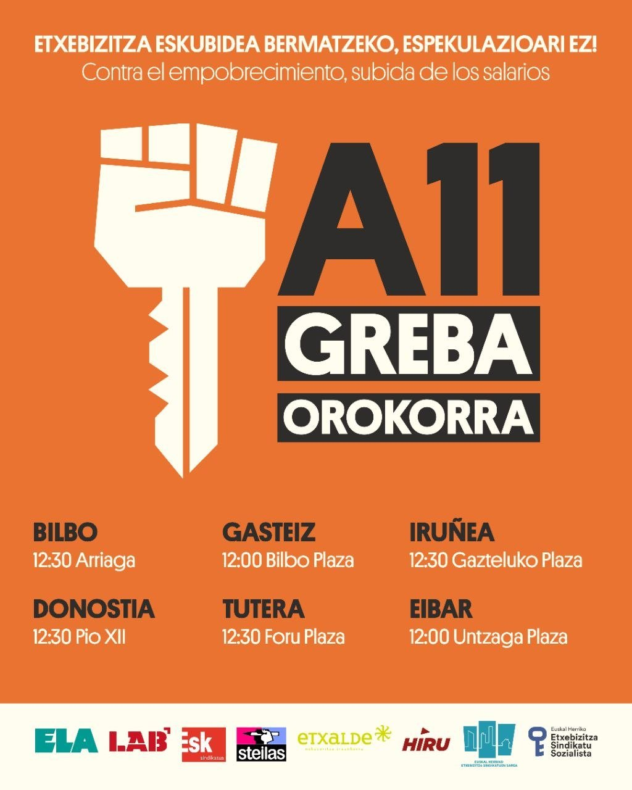
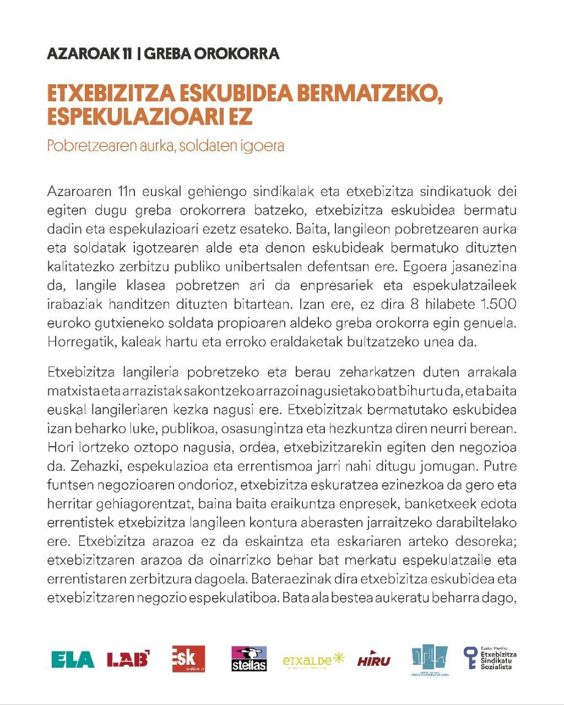

Agenda · 2026ko azaroaren 11
A11 · Greba Orokorra etxebizitza eskubidearen alde
Azaroaren 11n, klase sindikatuek eta etxebizitza sindikatuek greba orokorrera deitu dute, etxebizitza eskubidea bermatzeko eta espekulazioari aurre egiteko. Langile klasearen pobretzearen aurkako borroka eguna izango da, soldaten igoeraren alde eta kalitatezko zerbitzu publiko unibertsalen defentsan.
Har ditzagun kaleak. Etxebizitzak ezin du negozio izaten jarraitu.
Deialdiak
Bilbo12:30 · Arriaga
Gasteiz12:00 · Bilbo Plaza
Iruñea12:30 · Gazteluko Plaza
Donostia12:30 · Pío XII
Tutera12:30 · Foru Plaza
Eibar12:00 · Untzaga Plaza

